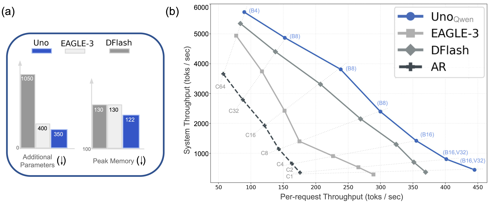

@misc{sahoo2026unlockinglosslessspeedupsllms,
title={Unlocking Lossless Speedups in LLMs via Discrete Diffusion},
author={Subham Sekhar Sahoo and Lingjie Chen and Khiem Pham and Jonathan Geuter and Chaitanya Dwivedi and Varad Pimpalkhute and Yash Akhauri and Alexander Moreno and Mikhail Yurochkin and Zhenting Wang and Mostafa Elhoushi and Nolan Dey and Shane Bergsma and Joel Hestness and John Thickstun and Eric Xing and Zhengzhong Liu},
year={2026},
eprint={2609.04010},
archivePrefix={arXiv},
primaryClass={cs.LG},
url={https://arxiv.org/abs/2609.04010},
}